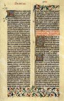

|
| A B C D E F G H I J K L M N O P Q R S T U V W X Y Z |
 In the present article we understand by editions of the Bible the printed reproductions of its original texts. We are not concerned with copies of the versions of the Bible, whether printed or written; nor do we purpose to consider the manuscript copies of the original text. The written reproductions are described under CODEX ALEXANDRINUS and similar articles. See also BIBLICAL CRITICISM in the latter part of which article will be found an explanation of the critical nomenclature of Bible codices and the symbols by which they are denoted. The translations of the Bible will be treated under the title VERSIONS OF THE BIBLE. Since the original text of the Bible was written in Hebrew or Greek (the original Aramaic portions can for the present purpose be considered as coincident with the Hebrew), our study of its printed reproductions naturally considers first the editions of the Hebrew text, and secondly those of the Greek.
Roughly speaking, there are three classes of editions of the Hebrew text:
Technically speaking, the Incunabula are the editions issued before the year 1500. From our present critical standpoint, they are very defective; but since they represent manuscripts now lost, they are important even for critical purposes. The following publications constitute the main body of the Incunabula:
By these we understand editions of the Bible reproduced either from manuscripts or previous printed editions without the aid of critical apparatus and the application of critical principles. While the editions of the Hebrew text thus far enumerated owed their publication to Jewish enterprise, those that follow were, at least in part, due to Christian scholarship. For practical purposes we may divide the common editions into two classes: (1) those not depending on other printed editions (independent editions); (2) those depending, at least partly, on a previously printed text (dependent, or mixed, editions).
This class of editions comprises two principal ones: (a) the "Biblia Polyglotta Complutensia"; (b) the "Biblia Rabbinica Bombergiana", second edition. Here we can give only a summary of their principal features.
(a) "Biblia Polyglotta Complutensia"
In the year 1502, Cardinal Ximenes engaged several learned scholars to prepare the edition of a polyglot Bible called variously after the name of its ecclesiastical patron and the place of its publication (Alcalá, in Lat. Complutum). The editors of the Hebrew text were Jewish converts. Ancient manuscripts, estimated at the value of 4000 florins, and probably also the best extant printed copies of the Hebrew text, were placed at their disposal. Thus the cardinal's scholars produced a text quite different from the other printed texts of his time. They marked the vowels, but not the accents. The Polyglot was finished in 1517, but was published only in 1520 or 1522, according to Gregory (Canon and Text of the New Testament, New York, 1907). The pure form of its text was only once reprinted in the so-called "Biblia Polyglotta Vatabli", or "Polyglotta Sanctandreana'', or again, "Bertram's Polyglot" (Heidelberg, 1586, 1599, 1616).
(b) "Biblia Rabbinica Bombergiana", second edition
Daniel Bomberg, of Antwerp, who had established a printing-office for Hebrew and rabbinic literature in Venice, published, in 1518, two important editions of the Hebrew text: (a) an edition for Christian readers, in quarto, which was reprinted in 1521, 1525-28, 1533, 1544; (b) an edition for Jewish readers, edited by the Jewish convert Felix Pratensis. It contained the Targumim, the Massorah, and many Jewish commentaries, but did not satisfy the Jews. Hence Bomberg found it advisable to publish another edition under the editorship of R. Jacob ben Chayim, the most celebrated Jewish scholar of his time. He brought the text into closer agreement with the Massorah, and added several more Jewish commentaries. The work appeared in Venice, in four folio volumes, 1525-26, and was justly regarded as the first Massoretic Bible. It won the approbation of both Jewish and Christian scholars, so that it had to be republished in 1547-49, and 1568; the last edition was brought out under the direction of John de Gara. In spite of the great merits of the work, it is not wholly free from defects; Ben Chayim paid too much attention to the Massorah and too little to reliable old manuscripts. The principal codex he followed fell afterwards into the hands of de Rossi, who testifies that it is quite defective and has not been carefully edited. Chayim printed it without correcting its most glaring mistakes.
The subsequent editions were influenced principally by Ben Chayim's text, and only secondarily by the Complutensian Polyglot. Thus the former text was repeated by Bragadin (Venice, 1617), and, in a slightly modified form, by Justiniani (Venice, 1551, 1552, 1563, 1573), the editors of Geneva (1618), John de Gara (Venice, 1566, 1568, 1582), Plantin (Antwerp, 1566), Hartmann (Frankfort, 1595, 1598), the editors of Wittenberg (1586, 1587), and Tores (Amsterdam, 1705). Long before the last publication appeared, John Buxtorf edited first the Hebrew text in manual form (Basle, 1611), then Chayim's rabbinic Bible in four folio volumes (Basle, 1618, 1619). Though he corrected some of Ben Chayim's mistakes, he allowed others to remain and even introduced some new ones. He ought not to have regulated the vocalization of the Targumim according to the vowels in the Chaldee fragments of the Bible, and it was at least inconsistent to change the Massorah according to the Hebrew text, seeing that Ben Chayim, whose text he professed to follow, had modified the Hebrew text according to the Massorah.
In the editions thus far mentioned the text of one or the other of the two principal forms of the Hebrew Bible was reproduced without any notable change. We have now to consider the attempts made to correct the text either according to the reading of other editions or according to that of ancient manuscripts.
(a) Texts Corrected according to Printed Texts
The first mixed text of the Hebrew Bible appeared in the Antwerp Polyglot (1569-72); the same text was repeated in the Paris Polyglot (1629-45), in the London Polyglot (1657), in that of Reineccius (Leipzig, 1750-51), the smaller Plantin editions (Antwerp, 1580, 1582; Burgos, 1581; Leyden, 1613), the manual edition of Reineccius (Leipzig, 1725, 1739, 1756), and in the Vienna Bible (1743). The beautifully printed Bible of Hutter (Hamburg, 1588) presents a peculiarly mixed text. Here may be added the names of a few editors who published a Hebrew text without vowels and without pretence to critical accuracy: Plantin (Antwerp, 1573, 8vo and 12mo; Leyden, 1595, 16mo; 1610, 12mo; Hanau, 1610, 24mo); Menasse ben Israel (Amsterdam, 1630, 1639, 8vo); Leusden (1694, 8vo); Maresius (1701, 8vo); Jablonsky (Berlin, 1711, 24mo); Forster (Oxford, 1750, 4to).
(b) Texts Corrected according to Codices and Printed Texts
The mixture of Chayim's text with the Complutensian could not give permanent satisfaction. Every comparison of the mixed text with that of any good manuscript brought to light many discrepancies and suggested the idea that a better Hebrew text might be obtained by the help of good codices. The first attempt to publish a Hebrew text thus corrected was made by John Leusden with the cooperation of the printer Jos. Athias (Amsterdam, 1661, 1667). The editor revised Chayim's text according to the readings of two codices, one of which was said to be about 900 years old. This edition, printed by Athias, was revised by George Nissel according to the readings of Hutter's Bible (Leyden, 1662). Nissel makes no pretence of having collated any codices, so that his work is noted for its scarcity rather than its critical value. Clodius, too, endeavoured to correct Athias's text according to earlier editions, but was not always successful (Frankfort, 1677, 1692, 1716). Jablonsky corrected the second edition of Athias according to the readings of several codices and of the better previous editions, paying special attention to the vowels and accents (Berlin, 1699, 1712); his first edition is commonly regarded as being one of the best. Van der Hooght corrected the second edition of Athias according to the Massorah and the previously printed editions (Amsterdam and Utrecht, 1705); his attention to the smallest details and the printer's care account for the general favour with which the edition was received. A still more perfect reprint of the edition was published by Props (Amsterdam, 1724). Simonis, too, published correct and cheap reprints of Van der Hooght's Bible. Opitz corrected the edition of Athias according to the readings of seventeen of the best previous editions and of several manuscripts (Kiel, 1709; Züllichau, 1741). He supervised the proof in person, and even the type was remarkable for its size and clearness, so that the edition was considered the most accurate extant. J. H. Michaelis edited the first Hebrew text with variants (Halle, 1720). He based it on the text of Jablonsky which he compared with twenty-four earlier editions and with five manuscripts preserved in Erfurt. The more important variants he added at the bottom of the page. It has been found that the comparison was made rather superficially as far as the printed editions were concerned, and there is no good reason for supposing that more care was taken in the comparison of the manuscript text. Still, the edition remains valuable, because it is the first of its kind, and some of its variants deserve attention even today. The Oratorian Father Houbigant tried to produce a text far superior to the commonly received one. Taking Van der Hooght's text for his basis, he added his own corrections and conjectures in critical notes. His apparatus consisted of a number of manuscripts, the ancient versions, and the Hebrew context. The precipitancy of his inferences and the rashness of his conjectures did much to create a prejudice against his method, though the merit of his work has been duly appreciated by scholars. His "Notæ Criticæ" were printed in separate form in Frankfort (1777), after the full edition had appeared in Paris (1753).
Here may be mentioned the work of the Italian Jew, Salomo Norzi. He began in the early years of the seventeenth century to compare Bomberg's text with the best of the printed editions, with a number of good manuscripts of both Bible and Massorah, with the Biblical citations found in the Talmud, the Midrashim, and in other rabbinic writings, and with the critical annotations of the more notable Jewish commentators; the results of his long study he summarized in a Massoretico-critical commentary intended to accompany the text of the Hebrew Bible, which had been rather scantily corrected. The title of the work was to be "Repairer of the Breach" (Isaiah 58:12), but the author died before he could publish his book. Nearly a century later, a Jewish physician named Raphael Chayim Italia had Norzi's work printed at his own expense under the title "Offering of the Gift" (Mantua, 1742-44). Among Christian scholars it appears to have remained unnoticed until Bruns and Dresde drew attention to it. In spite of his best intentions, Norzi at times rather corrupts than corrects the Hebrew text, because he prefers the readings of the Massorah to those of the manuscripts.
The editions thus far enumerated can hardly be called critical, since their editors either lacked the necessary apparatus or did not consider it prudent to correct the received Hebrew text according to the full light of their textual information. Later on, two classes of scholars published really critical editions of the Hebrew text; some endeavoured to restore critically the most correct Massoretic text obtainable; others tried to find the most accurate pre-Massoretic text.
In order to restore the correct Massoretic text it was necessary first to collect the apparatus. About the middle of the eighteenth century this need was felt very keenly by Benjamin Kennicott, a canon of Christ Church, Oxford, who determined to remedy the evil. Beginning in 1759, he collated either in person or through others as many as 615 Hebrew manuscripts, 52 printed editions, and the Talmud, continuing this preparation until the year 1773. Then he began the printing of the work (Vetus Testam. Hebr. cum var. lectionibus, 2 volumes, Oxford, 1776-80) based on Van der Hooght's Hebrew text as edited by Simonis. The variants, with their respective sources, were indicated below the text. In the introductory dissertation of the second volume the author gives the history of his enterprise and justifies its methods. He found this necessary because, after the appearance of the first volume, his critics had charged him with lack of care and discernment in the choice of the manuscripts used, of the variants noticed, and in the treatment of the Massorah.
Bernardo de Rossi, professor at Parma, tried to construct an apparatus that should not be open to the exceptions taken against Kennicott's work. The material on which de Rossi worked exceeded that of Kennicott by 731 manuscripts, 300 printed editions, and several ancient versions. In his work (Variæ lectiones Vet. Testam., 4 volumes, Parma, 1784-88) and its subsequent supplement (Supplementa ad varias s. text. lectiones, 1798) he noted the more important variants, gave a brief appreciation of their respective sources and their values, and paid due attention to the Massorah. He follows Van der Hooght's text as his basis, but considers it known, and so does not print it. All of de Rossi's critics are at one in admiring the laboriousness of his work, but they deny that its importance bears any proportion to the labour it implies. Perhaps the author himself, in his "Dissertatio præliminaris" to vol. IV, gives a fairer opinion of his work than his critics do. It can hardly be denied that de Rossi at least showed what can be done by a study of the manuscripts and of the old editions for the correction of the received Hebrew text.
The apparatus of the textual, or lower, criticism of the Old Testament text (see BIBLICAL CRITICISM) is not limited to the works of Kennicott and de Rossi; it comprises also the above-mentioned work of Salomo Norzi, re-edited in Vienna, 1813; the writings of Wolf ben Simson Heidenhaim; Frensdorff's "Ochla W' Ochlah" (1864), and "Massora Magna" (Hanover, 1876); the prophetic "Codex of St. Petersburg", dating back to 916, phototyped by Strack in 1876; all the recently discovered or recently studied codices and fragments, together with the works of the ancient Jewish grammarians and lexicographers.
But even with these means at their command, the editors of the Hebrew text did not at once produce an edition that could be called satisfactory from a critical point of view. The editions of Döderlein-Meisner (Leipzig, 1793) and Jahn (Vienna, 1807) only popularized the variants of Kennicott and de Rossi without utilizing them properly. The edition published under the name of Hahn and prefaced by Rosenmüller (Leipzig, 1834) is anything but critical. The stereotype editions of Hahn (Leipzig, 1839) and Theile (Leipzig, 1849) remained for many years the best manual texts extant. More recently the apparatus has been used to better advantage in the edition of Ginsburg (The New Massoretico-Critical Text of the Hebrew Bible, 1894) and in that of Baer and Delitzsch. The last-named appeared in single books, beginning with the year 1861. The Books of Exodus, Leviticus, Numbers, and Deuteronomy are still wanting; both editors are dead, so that their work will have to be completed by other hands.
The editors whose work we have thus far noticed endeavoured to restore as far as possible the text of the Massorah. However valuable such an edition may be in itself, it cannot pretend to be the last word which textual criticism has to say concerning the Hebrew text of the Old Testament. After all, the Massoretic text attained to its fixed form in the early centuries of the Christian Era; before that period there were found many text-forms which differed considerably from the Massoretic, and which nevertheless may represent the original text with fair accuracy. The most ancient and reliable witness for the pre-Massoretic text-form of the Hebrew Bible is found in the Septuagint. But it is practically certain that, even at the time of the Septuagint, the original text had suffered considerable corruptions; these can be corrected only by comparing parallel passages of the context, or again by conjectural criticism; a critical edition of this kind presupposes, therefore, a critical edition of the Septuagint text.
Various attempts have been made to restore the pre-Massoretic text of single books of the Old Testament: thus Olshausen worked at the reconstruction of the Book of Genesis (Beiträge zur Kritik des überlieferten Textes im Buche Genesis, 1870); Wellhausen (Text der Bücher Samuelis, 1871), Driver (Notes on the Hebrew Text of the Books of Samuel, 1890), and Klostermann (Die Bücher Samuelis und der Könige, 1887) at the correction of the Books of Samuel; Cornill at the correction of the Book of Ezechiel (Das Buch des Propheten Ezechiel, 1886). To these might be added various other publications; e.g., several recent commentaries, some of the works published by Bickell, etc. But all these works concern only part of the Old Testament text. "The Sacred Books of the Old Testament", edited by Paul Haupt (see BIBLICAL CRITICISM, s.v. Textual), is a series intended to embrace the whole Hebrew text, though the value of its criticism is in many instances questionable; Kittel's "Biblia Hebraica" (Leipzig, 1905), too, deserves a mention among the critical editions which attempt to restore the pre-Massoretic Hebrew text.
Before speaking of the Greek text of the New Testament, we shall have to give a brief account of the editions of the Greek books of the Old Testament. They appear partly in separate editions, partly in conjunction with the Septuagint.
The principal separate editions of the deuterocanonical books appeared at Antwerp, 1566 (Plantin), 1584, and with Latin text taken from Ximenes' Polyglot, 1612; at Frankfort, 1694; Halle, 1749, 1766 (Kircher); Leipzig, 1757 (Reineccius), 1804 (Augusti), 1837 (Apel), 1871 (Fritzsche); Oxford, 1805; London, 1871 (Greek and English); Frankfort and Leipzig, 1691 (partial edition); Book of Tobias, Franeker, 1591 (Drusius), and Freiburg, 1870 (Reusch); Book of Judith, Würzburg, 1887 (Scholz, Commentary); Book of Wisdom, 1586 (Holkoth's "Prælectiones" edited by Ryterus); Coburg, 1601 (Faber); Venice, 1827 (Greek, Latin, and Armenian); Freiburg, 1858 (Reusch); Oxford, 1881 (Deane); Ecclesiasticus, 1551, '55, '68, '70, '89, '90 (Drusius), 1804 (Bretschneider); Books of Machabees, Franeker, 1600 (Drusius); I Mach., Helmstädt, 1784 (Bruns).
The history of these editions of the deuterocanonical books of the Old Testament is connected with that of the Septuagint editions. The reader will find full information on this question in the article SEPTUAGINT.
The newly invented art of printing had flourished for more than half a century before an attempt was made to publish an edition of the Greek New Testament. The Canticles, Magnificat, and Benedictus were printed at Milan, 1481; at Venice, 1486 and 1496, as an appendix to the Greek Psalter; John 1:1 to 6:58, appeared in Venice, 1495 and 1504, together with the poems of St. Gregory Nazianzen; the beginning of the Fourth Gospel (John 1:1-14) was published at Venice, 1495, and at Tübingen, 1511. Not that the reading public of that age did not feel interested in the other parts of the New Testament; but it did not show any desire for the Greek text of the Bible. After the beginning of the sixteenth century the world's attitude with regard to the Greek text of the New Testament changed considerably. Not counting the publication of codices, mere stereotype reprints, or the issue of parts of the Testament, the number of editions of the complete Greek text has been estimated at about 550; in other words, since the beginning of the sixteenth century, every year has witnessed the publication of, roughly speaking, two new editions of the complete Greek text. For our present purpose, we may consider the principal editions under the four headings of the Complutensian, the Erasmian, the Received, and the Critical text.
It was the Archbishop of Toledo, Cardinal Ximenes de Cisneros, who began at Alcalá, in 1502, the preparation of the edition of the Old Testament in Hebrew, Greek, and Latin, and of the New Testament in Greek and Latin. It has been thus far impossible to ascertain what codices served as the basis of the work called the Complutensian Polyglot. Though Leo X sent from the Vatican Library some manuscripts venerandoe vetustatis for the use of the scholars engaged in the work at Alcalá, it is quite certain that the well-known Codex Vaticanus was not among them. It appears that the Greek New Testament text of the Polyglot rests on the readings of a few manuscripts only, belonging to the so-called Byzantine family (see BIBLICAL CRITICISM, s.v. Textual). The charge that the Complutensian text was corrected according to the evidence of the Latin Vulgate, is now generally abandoned, excepting with regard to I John, v, 7. The New-Testament text is contained in the fifth or, according to other arrangements, in the last of the six folios of the Polyglot; it was finished 10 Jan., 1514, and though the rest of the work was ready 10 July, 1517, four months before the great cardinal's death (8 Nov., 1517), it was not published until Leo X had given his permission proprio motu, 22 March, 1520.
The Complutensian text, corrected according to certain readings of the Erasmian and of that of Stephanus, was repeated in the Antwerp Polyglot published, under the auspices of King Philip II, by the Spanish theologian Benedict Arias Montanus and his companions, and printed by the celebrated typographer, Christopher Plantin, of Antwerp, 1569-72. The Greek New Testament text occurs in the fifth and in the last of the eight folios which make up the Antwerp Polyglot; in the fifth it is accompanied by the Syriac text (both in Hebrew and Syriac letters), its Latin version, and the Latin Vulgate; in the eighth volume, the Greek text has been corrected in a few passages, and is accompanied by the interlinear Latin Vulgate text. The text of the fifth volume of the Antwerp Polyglot was repeated only in the fifth volume of the Paris Polyglot, 1630-33, while that of the eighth volume reappears in a number of editions: Antwerp 1573-84 (four editions, Christopher Plantin); Leyden, 1591-1613 (four editions, Rapheleng); Paris, 1584 (Syriac, Latin, and Greek text; Prevosteau); Heidelberg, 1599, 1602 (Commelin); Lyons, 1599 (Vincent); Geneva, 1599; Geneva, 1609-27 (eight very different editions; Pierre de la Rouière, Sam. Crispin, James Stoer); Leipzig, 1657 (with the interlinear version of Arias Montanus; Kirchner); Vienna, 1740 (edited by Debiel, published by Kaliwoda); Mainz, 1753 (edited by Goldhagen; published by Varrentrapp); Liège, 1839 (Kersten). To these editions, containing the Plantinian, or the modified Complutensian, text, the following may be added, which represent a mixture of the text of Plantin and that of Stephanus: Cologne, 1592 (Amold Mylius; Greek and Latin text); Nuremberg, 1599-1600 (Hutter's Polyglot, twelve languages); 1602 (the same, four languages); Amsterdam, 1615 (the same, Welschaert); Geneva, 1628 (Jean de Tournes; one edition gives only the Greek text, another gives Beza's Latin version and a French translation).
On 17 April, 1515, the well known humanist, Beatus Rhenanus, invited Desiderius Erasmus, who lived at the time in England, to edit the Greek New Testament which John Froben, a celebrated printer of Basle, was anxious to publish before Pope Leo X should give his permission to put forth the Complutensian text printed more than a year before. Erasmus hastened to Basle, and printed almost bodily the text of the manuscripts that happened to fall into his hands: the Gospels according to a manuscript of Basle (Evv. 2); the Book of Acts and the Epistles according to another manuscript of Basle (Act. 2); the Apocalypse according to a manuscript named after Reuchlin "Codex Reuchlini" (Apoc. 1). He made a few corrections after superficially collating some other Basle manuscripts, Evv. 1 among the rest. Since Reuchlin's manuscript did not contain the end of the Apocalypse, Erasmus translated Apocalypse 22:16b-21, from the Vulgate. The printing began in Sept., 1515, and the whole New Testament text was finished in the beginning of March, 1516. Under these circumstances satisfactory work could hardly be expected; Erasmus himself, in a letter to Pirkheimer, confesses that the first New Testament edition is "præcipitatum verius quam editum". In 1519 appeared the second Erasmus edition, in which the text of the first was almost entirely repeated, though several hundred mistakes were corrected. Luther followed this edition in his German translation of the New Testament. Urged by the importunities of his critics, Erasmus admitted into his third edition (1522) the passage 1 John 5:7, according to the reading of the Codex Montfort. (Evv. 61). In his fourth edition (1527) he changed his text, especially in Apoc., in several passages according to the readings of the Complutensian Polyglot; in the fifth edition (1535) he repeated the text of the fourth with very few changes.
The Erasmian text was frequently reprinted: Venice, 1518; Hagenau, 1521; Basle, 1524, 31, etc.; Strasburg, 1524; Antwerp, 1571, etc.; Paris, 1546 and 1549 (Robertus Stephanus introduced corrections from the Complutensian Polyglot); in his third edition, R. Stephanus repeats the fifth Erasmian with variants from fifteen manuscripts and the Complutensian Polyglot (Paris, 1550). This edition is called Regia, and is the basis of the English Authorized Version (1611). Stephanus's fourth edition (Geneva, 1551) adds the Latin to the Greek text, the latter of which is for the first time divided into verses, a contrivance which was introduced into the Latin Vulgate in 1555, and then became general. The last edition of R. Stephanus was reprinted with slight modifications a great number of times; its principal repetitions were those supervised by Theodore Beta (Geneva, 1565, 1582, 1589, 1598 in folio; 1565, 1567, 1580, 1590, 1604 in octavo) and the brothers Bonaventure and Abraham Elzevir (Leyden, 1624, 1633, 1641; Amsterdam, 1656, 1662, 1670, 1678). In the preface of the second Elzevir edition (Leyden, 1633) we read the words: "Textum ergo habes nunc ab omnibus receptum." Hence this Elzevir text became known as the textus receptus, or the Received Text.
From what has been said it follows that the Received Text is that of the second Elzevir edition, which is practically identical with the text of Theodore Beza, or the fourth edition of Robertus Stephanus corrected in about one hundred and fifty passages according to the readings of the Codex Claromontanus, the Codex Cantabrigiensis, the Latin, Syriac, and Arabic versions, and certain critical notes of Henry Stephanus. In its turn, the fourth edition of Robertus Stephanus is almost identical with the fifth Erasmian edition which exhibits the text of five rather recent manuscripts corrected in about a hundred passages according to the reading of the Complutensian Polyglot. Still, it can hardly be denied that the readings peculiar to the text can be traced at least as far back as the fourth century. For about a century the Received Text held undisputed sway; its editions numbered about one hundred and seventy, some of the more important being the following:
In the last paragraph we have enumerated a list of editions of the Greek New Testament which contain, besides the text, a more or less complete apparatus for the critical reconstruction of the true reading. We shall now mention a number of editions in which such a reconstruction was attempted.
(1) Griesbach developed Bengel's method of grouping the variants into a formal system. He admitted three textual recensions: the Occidental, the Alexandrian (or Oriental), and the Constantinopolitan (or Byzantine). The first two he derived from the middle of the second century, and the third he considered as a mixture of the two, belonging to the fourth century, though subsequently modified. After laving down his principles of textual criticism, he tried to reconstruct the text best known in the ancient Church of both East and West. In 1774 he published the text of the synoptic Gospels; in 1796-1806, the text of the New Testament, called "Editio secunda"; in 1827 David Schulz added the first volume of a third edition. Griesbach is not always faithful to his principles, being too much under the sway of the Received Text; moreover, he did not sufficiently utilize the codices most important for his purpose. His text has been followed by Schott, Knapp, Tittmann, Hahn, and Theile.
(2) It suffices to mention the editions of Mace (London, 1729), Harwood (London, 1776), Matthaei (Riga, 1782-1788), Alter (Vienna, 1786), and Scholz (Leipzig, 1830-1836); the last named scholar (a Catholic, and professor of exegesis in the University of Bonn) reduced Griesbach's first two recensions to one, distinguishing it only from the Constantinopolitan text form, which he derived from the more correct copies circulating in Asia Minor, Syria, and Greece during the first centuries. Scholz himself had industriously collected manuscripts in the East. The labours of Hug and Eichhorn may also be mentioned briefly. The former substituted his so-called Common Edition, and the latter the uncorrected text of Asia and Africa, for Griesbach's Occidental class. Both Hug and Eichhorn assign the Alexandrian text-form to Hesychius, and the Byzantine to Lucian; finally, Hug assigns to the labours of Origen in his old age a fourth text-form identical with a middle class favoured by Griesbach and Eichhorn. Rinck (1830) divided the Occidental manuscripts into African and Latin, both of which are surpassed in purity by the Oriental.
(3) Carl Lachmann was the first critic who tried to reconstruct a New Testament text independent of the Received. Believing that the autograph text could not be found, he endeavoured to restore the text-form most common in the Oriental Church during the course of the fourth century. He published his small stereotype edition in 1831 (Berlin), and his large Latin-Greek text in 1842-50 (Berlin); this latter is accompanied by P. Buttmann's list of authorities for the Greek readings. Though Lachmann's text is preferable to the Received, his apparatus and the use he made of it are hardly satisfactory in the light of our present-day methods.
(4) Among the editors of the New Testament text, Tischendorf deserves a place of honour. During the thirty years which he devoted exclusively to textual studies, he published twenty or twenty-one editions of the Greek Testament; the most noteworthy among them belong to one or another of the following five recensions:
(6) The textual labours of Tregelles and Tischendorf were, to a certain extent, overshadowed by the work achieved by the two eminent Cambridge scholars, Brook Foss Westcott and Fenton John Anthony Hort. Like their predecessors, they acknowledged and followed the principles of Lachmann; but they differed from Lachmann as well as from Tischendorf and Tregelles in utilizing and systematizing the genealogical grouping of the ancient readings, thus connecting their labours with the views of Bengel and Criesbach. They distinguished four branches of textual tradition.
(7) Westcott and Hort's Greek New Testament, though hailed with delight by a great number of textual critics, did not meet with unchallenged praise. Among the dissenters were Godet, Wunderlich, Dobschütz, Jülicher, Bousset, and Burgon (The Revision Revised; The Quarterly Review, 1881-82; 2nd edit., London, 1885). Of these, some object to Westcott and Hort's method, others to their appreciation of Codex B, others to their attitude towards the so-called Western readings, others, finally, uphold the claims of the Received Text. In the third and fourth editions of his "Plain Introduction to the Criticism of the New Testament", F. H. Scrivener writes against the views of Tischendorf, Treffelles, and Westcott-Hort; he favours the readings of the later manuscripts in the reconstruction of the Greek New-Testament text, and advocates the return to a text-form similar to the Received Text. Among his various publications we may notice "The New Testament in the Original Greek, together with the Variations Adopted in the Revised Version'' (New Edition, London, 1894) and his various collations of texts (Twenty Manuscripts of the Gospels, London, 1853; Collation of Codex Sinaiticus with the Received Text, Cambridge and London, 1863, 1867). Here may be mentioned also "The Greek Testament with a critically revised text, a digest of various readings, marginal references to verbal and idiomatic usage, prolegomena, and a critical and exegetical commentary'' edited by Henry Alford, afterwards Dean of Canterbury (London, 1849-1857; sixth edition, 1871). Tischendorf was of opinion that Alford's revision of the text was not satisfactory. Again "The New Testament in the Original Greek, with Notes and Introduction'' (London, 1856-60; newly edited with index, 1867), by Christopher Wordsworth, Canon of Westminster, is a mixture of the texts of Griesbach, Lachmann, Tischendorf, and Elzevir. Finally, in connexion with the Revised Edition, Professor C. Palmer, of Oxford, published "The Greek Testament, with the Readings adopted by the Revisers of the Authorised Version" (Oxford, 1881; Clarendon Press).
(8) Among the chief works dealing with the textual restoration of the Greek New Testament which have appeared in recent years, we must mention the edition of B. Weiss: Part 1, Acts, Catholic Epistles, Apocalypse (Leipzig, 1894, Hinrichs); Part II, The Pauline Epistles together with Hebr. (1896); Part III, The Gospels (1900). A manual edition of this text appeared 1902-05, in three volumes; the mistakes of the first issue were corrected as far as possible. Richard Francis Weymouth edited in a handy form "The Resultant Greek Testament" (London, 1886, Elliot Stock; cheap edition, 1892 and 1896; third edition, 1905); in it he gives us the text on which the majority of modern editors are agreed, together with all the readings of Stephens (1550), Lachmann, Tregelles, Lightfoot, Ellicott, Alford, Weiss, the Bale Edition (1880), Westcott-Hort, and the Revision Committee, with an introduction by J. J. St. Perowne. The editor may not give the reader anything of his own, but he furnishes an amount of textual erudition which the Bible student can hardly afford to neglect. Dr. E. Nestle has edited a "Novum Testamentum Græce cum apparatu critico", (Stuttgart, 1898, 1899, 1901, 1903, 1904, 1906) based on the four most prominent of the recent texts: Tischendorf, Westcott-Hort, Weymouth, and Weiss. All the variants of the four editions, excepting as to minor details, are noted, so that the reader obtains at a glance the results of the foremost textual criticism on any given text. It would be difficult indeed to contrive a handier and more complete edition of the Greek text than this of Nestle's, which seems likely to become the Received Text of the twentieth century.
(9) It is, therefore, all the more to be regretted that Nestle's text cannot be recommended to the general Catholic reader. Not to mention other shortcomings, it places John 5:4 and 7:53-8:11, among the footnotes, and represents Mark 16:9-20, together with an alternative ending of the Second Gospel, as a "Western non-interpolation", suggesting that it is an ancient Eastern interpolation of the sacred text. The rules of the new Index enumerate with precision those classes of Catholics who may read texts like that of Nestle; others must content themselves with one or another of the following editions: P.A. Gratz reedited the Complutensian text (Tübingen, 1821; Füs); L. Van Ess published a combination of the Complutensian and the Erasmian text (Tübingen, 1827; Füs); Jaumann adheres closely to the edition of Tittmann (Munich, 1832; Lindauer); we have already mentioned Tischendorf's text prepared for Catholic readers under the influence of I.M. Jager (Paris, 1847, 1851, 1859); Reithmayr produced a combination of this latter edition and that of Lachmann (Munich, 1847; Ratisbon, 1851); V. Loch derived his text, as far as possible, from the Codex Vaticanus (Ratisbon, 1862); Tauchnitz published, with the approbation of the proper ecclesiastical authority of Dresden, Theile's text almost without change, together with the text of the Latin Vulgate; Brandseheid edited the Greek text and the Latin Vulgate of the New Testament in such a way as to bring the former as much as possible into agreement with the latter (Freiburg, 1901, etc.); finally, M. Hetzenauer published his "Novum Testamentum Græce" (Innsbruck, 1904, Wagner), reproducing in separate form the Greek text of his Greek-Latin edition (1896-98). He is more independent of the Vulgate text than Brandscheid, and he adds the more important variants in the margin, or in footnotes, or again in an appendix critica.
(10) It must not be imagined that the textual criticism of the New Testament has arrived at a state that can be regarded as final. Without doing injustice to the splendid results attained by the labours of the scholars enumerated in this article, it must be confessed that the condition of the textual criticism of the New Testament is more uncertain today than it was twenty years ago. The uncertainty springs mainly from the doubts of our critics as to the real value of the Western readings. Professor Blass may exaggerate the importance of these Western readings, at least with regard to the Book of Acts, when he considers them as the transcript of the inspired writer's first or rough copy, while he identifies the Eastern with the copy actually sent out to Antioch. Even if students repudiate Blass's view, they will be influenced by the conservative work of H. von Soden, which is now (1908) in course of publication (Die Schriften des NT. in ihrer ältesten erreichbaren Textgestalt hergestellt auf Grund ihrer Textgeschichte, Berlin, Duncker). The writer distinguishes three groups of readings: most manuscripts present the Antiochene text, which is probably the recension of Lucian, called K; about fifty witnesses represent the Egyptian text, probably the recension of Hesychius, denoted by H; the third group, denoted by I, is the Vulgate of Palestine. An investigation of the original form and the development of each of these recensions gives rise to a number of subdivisions. The problem for the textual critic is to discover the archetype which lies in each case at the bottom of the three recensions. If von Soden's method should eventually prove to be false, it may at least contribute to the improvement of our Greek New-Testament editions.
SWETE; An Introduction to the Old Testament in Greek (Cambridge, 1902), 171 sqq.; Urtext und Uebersetzungen der Bibel (Leipzig, 1897) 64 sqq.; NESTLE in HAST., Dictionary of the Bible (New York, 1903), IV, 437 sqq.; KAULEN in Kirchenlex., II. 596 sq.; MASCH, Bibliotheca sacra (Halle, 1778), I, 427-436
Several sources have been mentioned in the course of the article. We might refer the reader for a list of the other principal authors to KAULEN-WELTE-HUNDHAUSEN in Kirchenlex., s.v. Bibelausgaben, or to VON GEBHARDT in Realencyclopädie; LE LONG, Bibliotheca sacra, ed. MASCH (Halle, 1778), I, 187 sqq.; ROSENMÜLLER, Handbuch für die Literatur der biblischen Kritik und Exegese (Göttingen, 1797), I, 278 sqq.; HUG, Einleitung in die Schriften des Neuen Testaments (4th ed., Stuttgart, 1847), I, 268 sqq.; TREGELLES, An Account of the Printed Text of the Greek New Testament (London, 1854); HORNE AND TREGELLES, An Introduction to the Textual Criticism of the New Testament (London, 1856), 116 sqq., 648 sqq.; O'CALLAGHAN, A List Of Editions of the Holy Scriptures and parts thereof printed in America previous to 1860 (Albany, 1861); REUSS, Bibliotheca Novi Testamenti Groeci (Brunswick, 1872); HALL, A Critical Bibliography of the Greek New Testament as Published in America (Philadelphia, 1883); HUNDHAUSEN, Editionen des neutestamentlichen Textes und Schriften zur neutestamentlichen Textkritik seit Lachmann in Literar Handweiser (1882), 321 sqq.; SCHAFF, A Companion to the Greek Testament and the English Version (3rd ed., New York, 1888), 497 sqq.; RÜGG, Die neutestamentliche Textkritik seit Lachmann (Zürich, 1892); LUCAS, Textual Criticism and the Acts of the Apostles in Dublin Review (1894), 30 sqq.; BLASS, Acta Apostolorum etc. (Göttingen, 1895); ID., Acta Apostolorum, etc. (Leipzig, 1896); Id., Evangelium sec. Johannem (Leipzig, 1902); GREGORY, Textkritik des Neuen Testamentes (Leipzig, 1902); GREGORY, Canon and Text of the N.T. (New York, 1907); VON SODEN, Dir Schriften des NT. in ihrer ältesten erreichbaren Textgestalt etc. (Berlin, 1902, 1906).
APA citation. (1909). Editions of the Bible. In The Catholic Encyclopedia. New York: Robert Appleton Company. Retrieved April 26, 2010 from New Advent: http://www.newadvent.org/cathen/05286a.htm
MLA citation. "Editions of the Bible." The Catholic Encyclopedia. Vol. 5. New York: Robert Appleton Company, 1909. 26 Apr. 2010 <http://www.newadvent.org/cathen/05286a.htm>.
Transcription. This article was transcribed for New Advent by Douglas J. Potter. Dedicated to the Sacred Heart of Jesus Christ.
Ecclesiastical approbation. Nihil Obstat. May 1, 1909. Remy Lafort, Censor. Imprimatur. +John M. Farley, Archbishop of New York.
Contact information. The editor of New Advent is Kevin Knight. My email address is webmaster at newadvent.org. (To help fight spam, this address might change occasionally.) Regrettably, I can't reply to every letter, but I greatly appreciate your feedback — especially notifications about typographical errors and inappropriate ads.
{kind=link}
{kind=link}